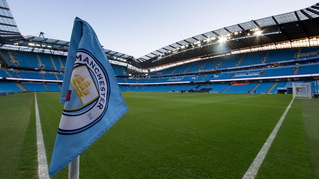

| Manchester City entered the Football League in 1899, and won their first major
honour with the FA Cup in 1904. It had its first major period of success in the
late 1960s, winning the League, FA Cup and League Cup under the management of
Joe Mercer and Malcolm Allison. After losing the 1981 FA Cup Final, the club
went through a period of decline, which eventually saw them relegated as far
down as third tier of English football by the end of the 1997–98 season.
They since regained promotion to the top tier in 2001–02 and have remained a
fixture in the Premier League since 2002–03. In 2008, Manchester City was
purchased by Abu Dhabi United Group for £210 million and received considerable
financial investment.
The club have won six domestic league titles. Under the management of Pep Guardiola
they won the Premier League in 2018 becoming the only Premier League team to attain
100 points in a single season. In 2019, they won four trophies, completing an
unprecedented sweep of all domestic trophies in England and becoming the first
English men's team to win the domestic treble. Manchester City's revenue was
the fifth highest of a football club in the world in the 2017–18 season at €527.7
million.In 2018, Forbes estimated the club was the fifth most valuable in
the world at $2.47 billion. |
 |